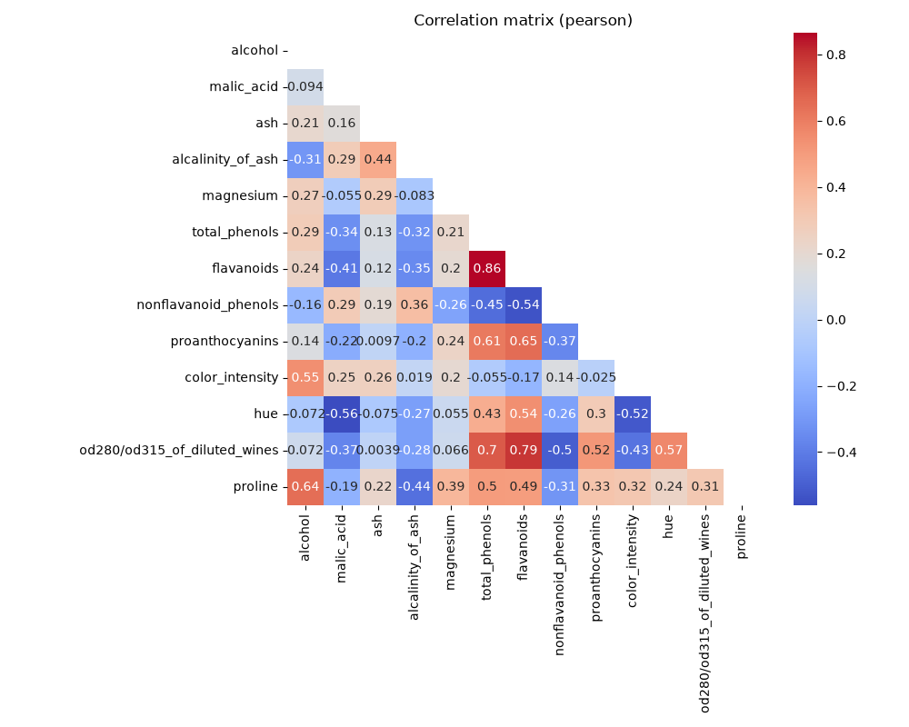
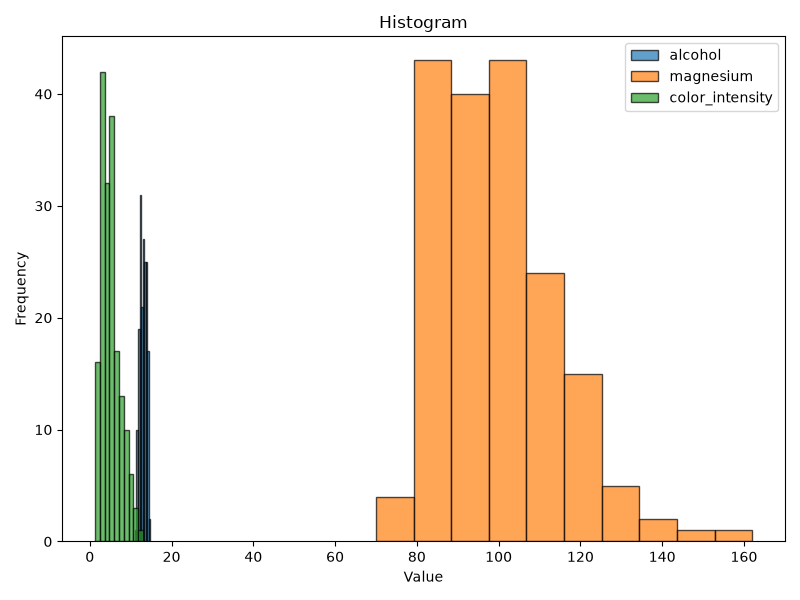

Note
Go to the end to download the full example code.
Explorer avant de modéliser#
Avant tout modèle : un rapport EDA complet, une carte de corrélation, la
distribution des variables, les valeurs manquantes, les outliers et la
multicolinéarité, le tout depuis Visualizer.
from trainedml.data.loader import DataLoader
from trainedml.visualization import Visualizer
X, y = DataLoader().load_dataset(name="wine")
viz = Visualizer(X)
Rapport EDA en une ligne#
report() génère un rapport HTML auto-contenu (statistiques
descriptives, corrélations, distributions, outliers, normalité) ; passez
un path pour l’écrire sur disque, ou récupérez directement le HTML.
html = viz.report(title="Rapport EDA - wine")
print(f"Rapport généré : {len(html)} caractères de HTML auto-contenu.")

Rapport généré : 273338 caractères de HTML auto-contenu.
Carte de corrélation#
Deux variables corrélées à plus de 0.8 en valeur absolue apportent largement la même information au modèle.
viz.heatmap()

<Axes: title={'center': 'Correlation matrix (pearson)'}>
Distribution des variables#
viz.histogram(columns=["alcohol", "magnesium", "color_intensity"], legend=True)

<Figure size 800x600 with 1 Axes>
Valeurs manquantes#
manquantes = viz.missing()
print(f"Colonnes avec valeurs manquantes : {len(manquantes)}")
Colonnes avec valeurs manquantes : 0
Outliers (méthode IQR)#
outliers = viz.outliers()
for colonne, info in outliers.items():
if info["count"] > 0:
print(f" {colonne:20s} : {info['count']} valeur(s) hors "
f"[{info['lower_bound']:.2f}, {info['upper_bound']:.2f}]")
malic_acid : 3 valeur(s) hors [-0.62, 5.30]
ash : 3 valeur(s) hors [1.69, 3.08]
alcalinity_of_ash : 4 valeur(s) hors [10.75, 27.95]
magnesium : 4 valeur(s) hors [59.50, 135.50]
proanthocyanins : 2 valeur(s) hors [0.20, 3.00]
color_intensity : 4 valeur(s) hors [-1.25, 10.67]
hue : 1 valeur(s) hors [0.28, 1.63]
Multicolinéarité (VIF)#
Cette implémentation ne recentre pas les données avant le calcul, ce qui gonfle mécaniquement le VIF des variables dont la moyenne est loin de zéro : lisez-le en classement relatif entre variables, pas au seuil manuel de 10.
print(viz.multicollinearity().to_string(index=False))
feature VIF
alcohol 206.189057
ash 165.640370
alcalinity_of_ash 73.141564
magnesium 67.364868
total_phenols 62.786935
od280/od315_of_diluted_wines 54.539165
hue 45.398407
flavanoids 35.535602
proanthocyanins 17.115665
color_intensity 17.022272
nonflavanoid_phenols 16.636708
proline 16.370828
malic_acid 8.925541
Total running time of the script: (0 minutes 2.763 seconds)